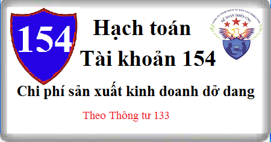

Cách hạch toán Tài khoản 154 theo Thông tư 133, Cách hạch toán Chi phí sản xuất kinh doanh như: Chi phí Nguyên vật liệu, Công cụ dụng cụ, chi phí tiền lương, nhân công, chi phí khấu hao may móc, thiết bị, chi phí thuê ngoài …
1. Nguyên tắc kế toán Tài khoản 154 - Chi phí sản xuất, kinh doanh dở dang
a) Tài khoản này dùng để phản ánh tổng hợp chi phí sản xuất, kinh doanh phục vụ cho việc tính giá thành sản phẩm, dịch vụ ở doanh nghiệp hạch toán hàng tồn kho theo phương pháp kê khai thường xuyên. Ở những doanh nghiệp hạch toán hàng tồn kho theo phương pháp kiểm kê định kỳ, Tài khoản 154 chỉ phản ánh giá trị thực tế của sản phẩm, dịch vụ dở dang đầu kỳ và cuối kỳ.
b) Tài khoản 154 "Chi phí sản xuất, kinh doanh dở dang" phản ánh chi phí sản xuất, kinh doanh phát sinh trong kỳ; chi phí sản xuất, kinh doanh của khối lượng sản phẩm, dịch vụ hoàn thành trong kỳ; chi phí sản xuất, kinh doanh dở dang đầu kỳ, cuối kỳ của các hoạt động sản xuất, kinh doanh chính, phụ và thuê ngoài gia công chế biến ở các doanh nghiệp sản xuất hoặc ở các doanh nghiệp kinh doanh dịch vụ. Tài khoản 154 cũng phản ánh chi phí sản xuất, kinh doanh của các hoạt động sản xuất, gia công chế biến, hoặc cung cấp dịch vụ của các doanh nghiệp thương mại, nếu có tổ chức các loại hình hoạt động này.
c) Chi phí sản xuất, kinh doanh hạch toán trên Tài khoản 154 phải được chi tiết theo địa điểm phát sinh chi phí (phân xưởng, bộ phận sản xuất, đội sản xuất, công trường,...); theo loại, nhóm sản phẩm, hoặc chi tiết, bộ phận sản phẩm; theo từng loại dịch vụ hoặc theo từng công đoạn dịch vụ.
d) Chi phí sản xuất, kinh doanh phản ánh trên Tài khoản 154 gồm những chi phí sau:
- Chi phí nguyên liệu, vật liệu trực tiếp;
- Chi phí nhân công trực tiếp;
- Chi phí sử dụng máy thi công (đối với hoạt động xây lắp);
- Chi phí sản xuất chung.
đ) Chi phí nguyên liệu, vật liệu, chi phí nhân công vượt trên mức bình thường và chi phí sản xuất chung cố định không phân bổ thì không được tính vào giá trị hàng tồn kho mà phải tính vào giá vốn hàng bán của kỳ kế toán.
e) Cuối kỳ, phân bổ chi phí sản xuất chung cố định và chi phí sản xuất chung biến đổi vào chi phí chế biến cho mỗi đơn vị sản phẩm theo chi phí thực tế phát sinh.
g) Không hạch toán vào Tài khoản 154 những chi phí sau:
- Chi phí bán hàng;
- Chi phí quản lý doanh nghiệp;
- Chi phí tài chính;
- Chi phí khác;
- Chi phí thuế thu nhập doanh nghiệp;
- Chi đầu tư xây dựng cơ bản;
- Các khoản chi được trang trải bằng nguồn khác.
2. Phương pháp vận dụng Tài khoản 154 trong ngành công nghiệp
a) Tài khoản 154 “Chi phí sản xuất, kinh doanh dở dang" áp dụng trong ngành công nghiệp dùng để tập hợp, tổng hợp chi phí sản xuất và tính giá thành sản phẩm của các phân xưởng, hoặc bộ phận sản xuất, chế tạo sản phẩm. Đối với các doanh nghiệp sản xuất có thuê ngoài gia công, chế biến, cung cấp lao vụ, dịch vụ cho bên ngoài hoặc phục vụ cho việc sản xuất sản phẩm thì chi phí của những hoạt động này cũng được tập hợp vào Tài khoản 154.
b) Chỉ được phản ánh vào Tài khoản 154 những nội dung chi phí sau:
- Chi phí nguyên liệu, vật liệu trực tiếp cho việc sản xuất, chế tạo sản phẩm;
- Chi phí nhân công trực tiếp cho việc sản xuất, chế tạo sản phẩm;
- Chi phí sản xuất chung phục vụ trực tiếp cho việc sản xuất, chế tạo sản phẩm.
c) Tài khoản 154 ở các doanh nghiệp sản xuất công nghiệp được hạch toán chi tiết theo địa điểm phát sinh chi phí (phân xưởng, bộ phận sản xuất), theo loại, nhóm sản phẩm, sản phẩm, hoặc chi tiết bộ phận sản phẩm.
d) Phần chênh lệch giữa chi phí sản xuất thử và số thu hồi từ việc thanh lý, nhượng bán sản phẩm sản xuất thử được hạch toán tăng hoặc giảm giá trị xây dựng cơ bản.
3. Phương pháp vận dụng Tài khoản 154 trong ngành nông nghiệp
a) Tài khoản 154 "Chi phí sản xuất, kinh doanh dở dang" áp dụng trong ngành nông nghiệp dùng để tập hợp tổng chi phí sản xuất và tính giá thành sản phẩm của các hoạt động nuôi trồng, chế biến sản phẩm hoặc dịch vụ nông nghiệp. Tài khoản này phải được hạch toán chi tiết theo ngành kinh doanh nông nghiệp (trồng trọt, chăn nuôi, chế biến,...), theo địa điểm phát sinh chi phí (phân xưởng, đội sản xuất,...), chi tiết theo từng loại cây con và từng loại sản phẩm, từng sản phẩm hoặc dịch vụ.
b) Giá thành sản xuất thực tế của sản phẩm nông nghiệp được xác định vào cuối vụ thu hoạch hoặc cuối năm. Sản phẩm thu hoạch năm nào thì tính giá thành trong năm đó nghĩa là chi phí chi ra trong năm nay nhưng năm sau mới thu hoạch sản phẩm thì năm sau mới tính giá thành.
c) Đối với ngành trồng trọt, chi phí phải được hạch toán chi tiết theo 3 loại cây:
- Cây ngắn ngày (lúa, khoai, sắn,...);
- Cây trồng một lần thu hoạch nhiều lần (dứa, chuối,...);
- Cây lâu năm (chè, cà phê, cao su, hồ tiêu, cây ăn quả,...).
Đối với các loại cây trồng 2, 3 vụ trong một năm, hoặc trồng năm nay, năm sau mới thu hoạch, hoặc loại cây vừa có diện tích trồng mới, vừa có diện tích chăm sóc thu hoạch trong cùng một năm,... thì phải căn cứ vào tình hình thực tế để ghi chép, phản ánh rõ ràng chi phí của vụ này với vụ khác, của diện tích này với diện tích khác, của năm trước với năm nay và năm sau,...
d) Không phản ánh vào tài khoản này chi phí khai hoang, trồng mới và chăm sóc cây lâu năm đang trong thời kỳ XDCB, chi phí bán hàng, chi phí quản lý doanh nghiệp, chi phí hoạt động tài chính và chi phí khác.
đ) Về nguyên tắc, chi phí sản xuất ngành trồng trọt được hạch toán chi tiết vào bên Nợ Tài khoản 154 "Chi phí sản xuất, kinh doanh dở dang" theo từng đối tượng tập hợp chi phí. Đối với một số loại chi phí có liên quan đến nhiều đối tượng hạch toán, hoặc liên quan đến nhiều vụ, nhiều thời kỳ thì phải phản ánh trên các tài khoản riêng, sau đó phân bổ vào giá thành của các loại sản phẩm liên quan như: Chi phí tưới tiêu nước, chi phí chuẩn bị đất và trồng mới năm đầu của những cây trồng một lần, thu hoạch nhiều lần (chi phí này không thuộc vốn đầu tư XDCB),...
e) Trên cùng một diện tích canh tác, nếu trồng xen từ hai loại cây nông nghiệp ngắn ngày trở lên thì những chi phí phát sinh có liên quan trực tiếp đến loại cây nào thì tập hợp riêng cho loại cây đó (như: Hạt giống, chi phí gieo trồng, thu hoạch,...), chi phí phát sinh chung cho nhiều loại cây (chi phí cày bừa, tưới tiêu nước,...) thì được tập hợp riêng và phân bổ cho từng loại cây theo diện tích gieo trồng, hoặc theo một tiêu thức phù hợp.
g) Đối với cây lâu năm, quá trình từ khi làm đất, gieo trồng, chăm sóc đến khi bắt đầu có sản phẩm (thu, bói) thì được hạch toán như quá trình đầu tư XDCB để hình thành nên TSCĐ được tập hợp chi phí ở TK 241 “XDCB dở dang". Chi phí cho vườn cây lâu năm trong quá trình sản xuất, kinh doanh bao gồm các chi phí cho khâu chăm sóc, khâu thu hoạch.
h) Khi hạch toán chi phí ngành chăn nuôi trên Tài khoản 154 cần chú ý một số điểm sau:
- Hạch toán chi phí chăn nuôi phải chi tiết cho từng loại hoạt động chăn nuôi (như chăn nuôi trâu bò, chăn nuôi lợn,...), theo từng nhóm hoặc từng loại gia súc, gia cầm;
- Súc vật con của đàn súc vật cơ bản hay nuôi béo đẻ ra sau khi tách mẹ được mở sổ chi tiết theo dõi riêng theo giá thành thực tế;
- Đối với súc vật cơ bản khi đào thải chuyển thành súc vật nuôi lớn, nuôi béo được hạch toán vào Tài khoản 154 theo giá trị còn lại của súc vật cơ bản;
- Đối tượng tính giá thành trong ngành chăn nuôi là: 1 kg sữa tươi, 1 con bò con tiêu chuẩn, giá thành 1 kg thịt tăng, giá thành 1 kg thịt hơi, giá thành 1 ngày/con chăn nuôi,...
i) Phần chi phí nguyên vật liệu, chi phí nhân công trực tiếp vượt trên mức bình thường, chi phí sản xuất chung cố định không phân bổ thì không được tính vào giá thành sản phẩm mà được hạch toán vào giá vốn hàng bán của kỳ kế toán.
4. Phương pháp vận dụng Tài khoản 154 trong ngành dịch vụ
a) Tài khoản 154 “Chi phí sản xuất, kinh doanh dở dang" áp dụng trong các doanh nghiệp kinh doanh dịch vụ như: Giao thông vận tải, bưu điện, du lịch, dịch vụ,... Tài khoản này dùng để tập hợp chi phí (nguyên liệu, vật liệu trực tiếp, nhân công trực tiếp, chi phí sản xuất chung) và tính giá thành của khối lượng dịch vụ đã thực hiện.
b) Đối với ngành giao thông vận tải, tài khoản này dùng để tập hợp chi phí và tính giá thành về vận tải đường bộ (ô tô, tàu điện, vận tải bằng phương tiện thô sơ khác...) vận tải đường sắt, đường thủy, đường hàng không, vận tải đường ống,... Tài khoản 154 áp dụng cho ngành giao thông vận tải phải được mở chi tiết cho từng loại hoạt động (vận tải hành khách, vận tải hàng hóa,...) theo từng doanh nghiệp hoặc bộ phận kinh doanh dịch vụ.
c) Trong quá trình vận tải, săm lốp bị hao mòn với mức độ nhanh hơn mức khấu hao đầu xe nên thường phải thay thế nhiều lần nhưng giá trị săm lốp thay thế không tính vào giá thành vận tải ngay một lúc khi xuất dùng thay thế mà phải phân bổ dần theo từng kỳ. Vì vậy, hàng kỳ các doanh nghiệp vận tải ôtô được trích trước chi phí săm lốp vào giá thành vận tải (chi phí phải trả) theo quy định của chế độ tài chính hiện hành.
d) Phần chi phí nguyên liệu, vật liệu, chi phí nhân công trực tiếp vượt trên mức bình thường và phần chi phí sản xuất chung cố định không phân bổ thì không được tính vào giá thành sản phẩm mà được hạch toán vào giá vốn hàng bán của kỳ kế toán.
đ) Đối với hoạt động kinh doanh du lịch, tài khoản này được mở chi tiết theo từng loại hoạt động như: Hướng dẫn du lịch, kinh doanh khách sạn, kinh doanh vận tải du lịch,...
e) Trong hoạt động kinh doanh khách sạn, Tài khoản 154 phải mở chi tiết theo từng loại dịch vụ như: dịch vụ ăn uống, dịch vụ buồng nghỉ, dịch vụ vui chơi giải trí, phục vụ khác (giặt, là, cắt tóc, điện tín, thể thao,...).
5. Phương pháp vận dụng Tài khoản 154 trong ngành xây dựng
a) Đối với hoạt động kinh doanh xây lắp quy định chỉ áp dụng phương pháp hạch toán hàng tồn kho theo phương pháp kê khai thường xuyên, không áp dụng phương pháp hạch toán hàng tồn kho theo phương pháp kiểm kê định kỳ nên Tài khoản 154 dùng để tập hợp chi phí sản xuất, kinh doanh, phục vụ cho việc tính giá thành sản xuất sản phẩm xây lắp công nghiệp, dịch vụ của doanh nghiệp xây lắp.
b) Phần chi phí nguyên liệu, vật liệu trực tiếp, chi phí nhân công trực tiếp vượt trên mức bình thường không được tính vào giá thành công trình xây lắp mà được hạch toán vào giá vốn hàng bán của kỳ kế toán.
c) Tài khoản này trong ngành Xây lắp có thể theo dõi chi tiết theo các hoạt động sau:
- Xây lắp: Dùng để tập hợp chi phí, tính giá thành sản xuất sản phẩm xây lắp và phản ánh giá trị sản phẩm xây lắp dở dang cuối kỳ;
- Sản phẩm khác: Dùng để tập hợp chi phí, tính giá thành sản xuất sản phẩm khác và phản ánh giá trị sản phẩm khác dở dang cuối kỳ (thành phẩm, cấu kiện xây lắp,...);
- Dịch vụ: Dùng để tập hợp chi phí, tính giá thành dịch vụ và phản ánh chi phí dịch vụ dở dang cuối kỳ;
- Chi phí bảo hành xây lắp: Dùng để tập hợp chi phí bảo hành công trình xây dựng, lắp đặt thực tế phát sinh trong kỳ và giá trị công trình bảo hành xây lắp còn dở dang cuối kỳ.
d) Việc tập hợp chi phí sản xuất, tính giá thành sản phẩm xây lắp phải theo từng công trình, hạng mục công trình và theo khoản mục giá thành quy định trong giá trị dự toán xây lắp, gồm:
- Chi phí vật liệu;
- Chi phí nhân công;
- Chi phí sử dụng máy thi công;
- Chi phí chung.
Riêng chi phí chung được tập hợp chi phí "Xây lắp": Chỉ bao gồm chi phí chung phát sinh ở đội nhận thầu hoặc công trường xây lắp. Còn chi phí quản lý doanh nghiệp xây lắp (là một bộ phận của chi phí chung) được tập hợp bên Nợ Tài khoản 642 "Chi phí quản lý kinh doanh". Chi phí này sẽ được kết chuyển vào bên Nợ Tài khoản 911 "Xác định kết quả kinh doanh" tham gia vào giá thành toàn bộ sản phẩm xây lắp hoàn thành và bán ra trong kỳ.
đ) Chủ đầu tư xây dựng bất động sản sử dụng tài khoản này để tập hợp chi phí xây dựng thành phẩm bất động sản. Trường hợp bất động sản xây dựng sử dụng cho nhiều mục đích (làm văn phòng, cho thuê hoặc để bán, ví dụ như tòa nhà chung cư hỗn hợp) thì thực hiện theo nguyên tắc:
- Nếu đủ căn cứ để hạch toán riêng hoặc xác định được tỷ trọng của phần chi phí xây dựng bất động sản để bán (thành phẩm bất động sản) và phần chi phí xây dựng bất động sản để cho thuê hoặc làm văn phòng (TSCĐ hoặc bất động sản đầu tư) thì phải hạch toán riêng trên TK 154 phần chi phí xây dựng thành phẩm bất động sản. Phần chi phí xây dựng TSCĐ hoặc bất động sản đầu tư được phản ánh riêng trên TK 241 - Xây dựng cơ bản dở dang.
- Trường hợp không hạch toán riêng hoặc xác định được tỷ trọng chi phí xây dựng cho các cấu phần thành phẩm bất động sản, TSCĐ hoặc bất động sản đầu tư thì kế toán tập hợp chi phí phát sinh liên quan trực tiếp tới việc đầu tư xây dựng trên TK 241. Khi công trình, dự án hoàn thành bàn giao đưa vào sử dụng, kế toán căn cứ cách thức sử dụng tài sản trong thực tế để kết chuyển chi phí đầu tư xây dựng phù hợp với bản chất của từng loại tài sản.
e) Khoản dự phòng chi phí bảo hành công trình xây lắp được hạch toán vào chi phí sản xuất kinh doanh từng kỳ, hết thời hạn bảo hành nếu số bảo hành đã trích lập lớn hơn chi phí thực tế đã phát sinh thì ghi tăng thu nhập khác trong kỳ. Trường hợp ngược lại thì hạch toán vào giá vốn hàng bán trong kỳ.
g) Các khoản chi phí của hợp đồng xây lắp không thể thu hồi (ví dụ: Không đủ tính thực thi về mặt pháp lý như có sự nghi ngờ về hiệu lực của nó, hoặc hợp đồng mà khách hàng không thể thực thi nghĩa vụ của mình...) phải được ghi nhận ngay là giá vốn hàng bán trong kỳ.
h) Các khoản thu từ việc bán nguyên liệu, vật liệu thừa và thanh lý máy móc, thiết bị thi công khi kết thúc hợp đồng xây dựng được ghi giảm chi phí sản xuất kinh doanh.
i) Hạch toán khoản mục nguyên liệu, vật liệu trực tiếp:
- Khoản mục chi phí nguyên liệu, vật liệu trực tiếp bao gồm: Giá trị thực tế của vật liệu chính, vật liệu phụ, các cấu kiện hoặc các bộ phận rời, vật liệu luân chuyển tham gia cấu thành thực thể sản phẩm xây, lắp hoặc giúp cho việc thực hiện và hoàn thành khối lượng xây, lắp (không kể vật liệu phụ cho máy móc, phương tiện thi công và những vật liệu tính trong chi phí chung).
- Nguyên tắc hạch toán khoản mục nguyên liệu, vật liệu trực tiếp: Nguyên liệu, vật liệu sử dụng cho xây dựng hạng mục công trình nào phải tính trực tiếp cho sản phẩm hạng mục công trình đó trên cơ sở chứng từ gốc theo số lượng thực tế đã sử dụng và theo giá thực tế xuất kho (giá bình quân gia quyền; Giá nhập trước, xuất trước, thực tế đích danh).
- Cuối kỳ hạch toán hoặc khi công trình hoàn thành, tiến hành kiểm kê số vật liệu còn lại tại nơi sản xuất (nếu có) để ghi giảm trừ chi phí nguyên liệu, vật liệu trực tiếp xuất sử dụng cho công trình.
- Trong điều kiện thực tế sản xuất xây lắp không cho phép tính chi phí nguyên liệu, vật liệu trực tiếp cho từng công trình, hạng mục công trình thì doanh nghiệp có thể áp dụng phương pháp phân bổ vật liệu cho đối tượng sử dụng theo tiêu thức hợp lý (tỷ lệ với định mức tiêu hao nguyên liệu, vật liệu,...).
k) Hạch toán khoản mục chi phí sử dụng máy thi công:
- Khoản mục chi phí sử dụng máy thi công bao gồm: Chi phí cho các máy thi công nhằm thực hiện khối lượng công tác xây lắp bằng máy. Máy móc thi công là loại máy trực tiếp phục vụ xây lắp công trình. Đó là những máy móc chuyển động bằng động cơ hơi nước, diezen, xăng, điện,... (kể cả loại máy phục vụ xây, lắp).
- Chi phí sử dụng máy thi công bao gồm: Chi phí thường xuyên và chi phí tạm thời. Chi phí thường xuyên cho hoạt động của máy thi công, gồm: Chi phí nhân công điều khiển máy, phục vụ máy,...; Chi phí vật liệu; Chi phí công cụ, dụng cụ; Chi phí khấu hao TSCĐ; Chi phí dịch vụ mua ngoài (chi phí sửa chữa nhỏ, điện, nước, bảo hiểm xe, máy,...); Chi phí khác bằng tiền.
- Chi phí tạm thời cho hoạt động của máy thi công, gồm: Chi phí sửa chữa lớn máy thi công (đại tu, trung tu,...) không đủ điều kiện ghi tăng nguyên giá máy thi công; Chi phí công trình tạm thời cho máy thi công (lều, lán, bệ, đường ray chạy máy,...). Chi phí tạm thời của máy có thể phát sinh trước (được hạch toán vào bên Nợ Tài khoản 242) sau đó sẽ phân bổ dần vào Nợ Tài khoản 154 "Chi phí sản xuất kinh doanh dở dang"; Hoặc phát sinh sau, nhưng phải tính trước vào chi phí sản xuất xây lắp trong kỳ (do liên quan tới việc sử dụng thực tế máy móc thi công trong kỳ). Trường hợp này phải tiến hành trích trước chi phí, ghi Có Tài khoản 352 "Dự phòng phải trả", Nợ Tài khoản 154 chi tiết chi phí sử dụng máy thi công.
l) Hạch toán khoản mục chi phí sản xuất chung:
Chi phí sản xuất chung phản ánh chi phí sản xuất của đội, công trường xây dựng gồm: Lương nhân viên quản lý phân xưởng, tổ, đội xây dựng; Khoản trích bảo hiểm xã hội, bảo hiểm y tế, bảo hiểm thất nghiệp, bảo hiểm tai nạn lao động, kinh phí công đoàn được tính theo tỉ lệ quy định trên tiền lương phải trả của nhân viên sử dụng máy thi công và nhân viên quản lý phân xưởng, tổ, đội; Khấu hao tài sản cố định dùng chung cho hoạt động của đội và những chi phí khác liên quan đến hoạt động của đội,...
6. Kết cấu và nội dung Tài khoản 154 - Chi phí sản xuất, kinh doanh dở dang
Bên Nợ:
- Các chi phí nguyên liệu, vật liệu trực tiếp, chi phí nhân công trực tiếp, chi phí sử dụng máy thi công, chi phí sản xuất chung phát sinh trong kỳ liên quan đến sản xuất sản phẩm và chi phí thực hiện dịch vụ;
- Các chi phí nguyên liệu, vật liệu trực tiếp, chi phí nhân công trực tiếp, chi phí sử dụng máy thi công, chi phí sản xuất chung phát sinh trong kỳ liên quan đến giá thành sản phẩm xây lắp công trình hoặc giá thành xây lắp theo giá khoán nội bộ;
- Kết chuyển chi phí sản xuất, kinh doanh dở dang cuối kỳ (trường hợp doanh nghiệp hạch toán hàng tồn kho theo phương pháp kiểm kê định kỳ).
Bên Có:
- Giá thành sản xuất thực tế của sản phẩm đã chế tạo xong nhập kho, chuyển đi bán, tiêu dùng nội bộ ngay hoặc sử dụng ngay vào hoạt động XDCB;
- Giá thành sản xuất sản phẩm xây lắp hoàn thành bàn giao từng phần, hoặc toàn bộ tiêu thụ trong kỳ; hoặc bàn giao cho doanh nghiệp nhận thầu chính xây lắp (cấp trên hoặc nội bộ); hoặc giá thành sản phẩm xây lắp hoàn thành chờ tiêu thụ;
- Chi phí thực tế của khối lượng dịch vụ đã hoàn thành cung cấp cho khách hàng;
- Trị giá phế liệu thu hồi, giá trị sản phẩm hỏng không sửa chữa được;
- Trị giá nguyên liệu, vật liệu, hàng hóa gia công xong nhập lại kho;
- Phản ánh chi phí nguyên vật liệu, chi phí nhân công vượt trên mức bình thường không được tính vào trị giá hàng tồn kho mà phải tính vào giá vốn hàng bán của kỳ kế toán. Đối với doanh nghiệp sản xuất theo đơn đặt hàng, hoặc doanh nghiệp có chu kỳ sản xuất sản phẩm dài mà hàng kỳ kế toán đã phản ánh chi phí sản xuất chung cố định vào TK 154 đến khi sản phẩm hoàn thành mới xác định được chi phí sản xuất chung cố định không được tính vào trị giá hàng tồn kho thì phải hạch toán vào giá vốn hàng bán (Có TK 154, Nợ TK 632);
- Kết chuyển chi phí sản xuất, kinh doanh dở dang đầu kỳ (trường hợp doanh nghiệp hạch toán hàng tồn kho theo phương pháp kiểm kê định kỳ).
Số dư bên Nợ: Chi phí sản xuất, kinh doanh còn dở dang cuối kỳ.
7. Cách hạch toán chi phí sản xuất kinh doanh dở dang Tài khoản 154 trong ngành Công nghiệp
7.1. Trường hợp hạch toán hàng tồn kho theo phương pháp kê khai thường xuyên
a) Khi xuất nguyên liệu, vật liệu, công cụ dụng cụ, sử dụng cho hoạt động sản xuất sản phẩm, hoặc thực hiện dịch vụ trong kỳ, ghi:
Nợ TK 154 - Chi phí sản xuất, kinh doanh dở dang
Có Tài Khoản 152 Nguyên liệu vật liệu.
Có TK 153 Công cụ dụng cụ
- Khi xuất công cụ, dụng cụ có giá trị lớn sử dụng cho nhiều kỳ sản xuất kinh doanh phải phân bổ dần, ghi:
Nợ TK 242 - Chi phí trả trước
Có Tài khoản 153 Công cụ dụng cụ.
- Khi phân bổ giá trị công cụ dụng cụ vào chi phí sản xuất, ghi:
Nợ TK 154 - Chi phí sản xuất, kinh doanh dở dang
Có TK 242 Chi phí trả trước.
b) Khi mua nguyên liệu, vật liệu sử dụng ngay (không qua nhập kho) cho hoạt động sản xuất sản phẩm, hoặc thực hiện dịch vụ thuộc đối tượng chịu thuế GTGT tính theo pp khấu trừ, ghi:
Nợ TK 154 - Chi phí sản xuất, kinh doanh dở dang
Nợ TK 133 - Thuế GTGT được khấu trừ
Có các TK 331, 141, 111, 112,...
- Khi mua nguyên liệu, vật liệu (không qua nhập kho) sử dụng ngay cho hoạt động sản xuất sản phẩm hoặc thực hiện dịch vụ không thuộc đối tượng chịu thuế GTGT hoặc thuộc đối tượng chịu thuế GTGT tính theo pp trực tiếp thì giá mua nguyên liệu, vật liệu bao gồm cả thuế GTGT.
c) Khi số nguyên liệu, vật liệu xuất ra cho hoạt động sản xuất sản phẩm, hoặc thực hiện dịch vụ cuối kỳ không sử dụng hết vào nhập lại kho, ghi:
Nợ TK 152 - Nguyên liệu, vật liệu
Có TK 154 - Chi phí sản xuất, kinh doanh dở dang
d) Tiền lương, tiền công và các khoản khác phải trả cho nhân công sản xuất, nhân viên quản lý phân xưởng, ghi:
Nợ TK 154 - Chi phí sản xuất, kinh doanh dở dang
Có TK 334 Phải trả người lao động.
đ) Tính, trích bảo hiểm xã hội, bảo hiểm y tế, bảo hiểm thất nghiệp, bảo hiểm tai nạn lao động, kinh phí công đoàn (phần tính vào chi phí doanh nghiệp phải chịu) tính trên số tiền lương, tiền công phải trả công nhân sản xuất, nhân viên quản lý phân xưởng theo chế độ quy định, ghi:
Nợ TK 154 - Chi phí sản xuất, kinh doanh dở dang
Có TK 338 Phải trả phải nộp khác (chi tiết TK cấp 2).
e) Khi trích trước tiền lương nghỉ phép của công nhân sản xuất, ghi:
Nợ TK 154 - Chi phí sản xuất, kinh doanh dở dang
Có TK 335 Chi phí phải trả
g) Trích khấu hao máy móc, thiết bị, nhà xưởng sản xuất .... thuộc các phân xưởng, bộ phận, tổ đội sản xuất, ghi:
Nợ TK 154 - Chi phí sản xuất, kinh doanh dở dang
Có TK 214 Hao mòn TSCĐ.
h) Chi phí điện, nước, điện thoại ... thuộc phân xưởng, bộ phẩn sản xuất, ghi:
Nợ TK 154 - Chi phí sản xuất, kinh doanh dở dang
Nợ TK 133 – Thuế GTGT được khấu trừ (nếu có)
Có các Tài khoản 111, 112, 331 ....
i) Trị giá nguyên liệu, vật liệu xuất thuê ngoài gia công:
Nợ TK 154 - Chi phí sản xuất, kinh doanh dở dang
Có TK 152 – Nguyên vật liệu.
k) Nhập kho giá trị nguyên vật liệu, công cụ dụng cụ gia công chế biến xong, ghi:
Nợ TK 152 – Nguyên vật liệu.
Nợ TK 153 – Công cụ dụng cụ.
Có TK 154 - Chi phí sản xuất, kinh doanh dở dang.
l) Trị giá sản phẩm hỏng không sửa chữa được, người gây ra thiệt hại sản phẩm hỏng phải bồi thường, ghi:
Nợ Tài khoản 138 Phải thu khác (1388)
Nợ TK 334 - Phải trả người lao động
Có TK 154 - Chi phí sản xuất, kinh doanh dở dang.
m) Chi phí nguyên vật liệu, nhân công trực tiếp vượt trên mức bình thường, chi phí sản xuất chung cố định không phân bổ (không được tính vào giá trị giá hàng tồn kho) phải hạch toán vào giá vốn hàng bán của kỳ kế toán, ghi:
Nợ TK 632 - Giá vốn hàng bán
Có TK 154 - Chi phí sản xuất, kinh doanh dở dang.
n) Giá thành sản xuất thực tế sản phẩm sản xuất xong nhập kho hoặc tiêu thụ ngay, ghi:
Nợ Tài khoản 155 Thành phẩm
Nợ TK 632 - Giá vốn hàng bán
Có TK 154 - Chi phí sản xuất, kinh doanh dở dang.
o) Trường hợp sản phẩm sản xuất ra được sử dụng tiêu dùng nội bộ ngay hoặc tiếp tục xuất dùng cho hoạt động XDCB không qua nhập kho, ghi:
Nợ các TK 642, 241
Có TK 154 - Chi phí sản xuất, kinh doanh dở dang.
p) Trường hợp sau khi đã xuất kho nguyên vật liệu đưa vào sản xuất, nếu nhận được khoản chiết khấu thương mại hoặc giảm giá hàng bán (kể cả các khoản tiền phạt vi phạm hợp đồng kinh tế về bản chất làm giảm giá trị bên mua phải thanh toán) liên quan đến nguyên vật liệu đó, kế toán ghi giảm chi phí sản xuất kinh doanh dở dang đối với phần chiết khấu thương mại, giảm giá hàng bán được hưởng tương ứng với số NVL đã xuất dùng để sản xuất sản phẩm dở dang:
Nợ các TK 111, 112, 331,....
Có TK 154 - Chi phí sản xuất kinh doanh dở dang (phần chiết khấu thương mại, giảm giá hàng bán được hưởng tương ứng với số NVL đã xuất dùng để sản xuất sản phẩm dở dang)
Có TK 133 - Thuế GTGT được khấu trừ (1331) (nếu có).
q) Kế toán sản phẩm sản xuất thử:
- Các chi phí sản xuất sản phẩm thử được tập hợp trên TK 154 như đối với các sản phẩm khác. Khi thu hồi (bán, thanh lý) sản phẩm sản xuất thử, ghi:
Nợ các TK 111, 112, 131
Có TK 154 - Chi phí sản xuất kinh doanh dở dang
Có TK 3331 Thuế GTGT phải nộp (nếu có).
- Kết chuyển phần chênh lệch giữa chi phí sản xuất thử và số thu hồi từ việc bán, thanh lý sản phẩm sản xuất thử:
+ Nếu chi phí sản xuất thử cao hơn số thu hồi từ việc bán, thanh lý sản phẩm sản xuất thử, kế toán ghi tăng giá trị tài sản đầu tư xây dựng, ghi:
Nợ TK 241 Xây dựng cơ bản dở dang.
Có TK 154 - Chi phí sản xuất kinh doanh dở dang.
+ Nếu chi phí sản xuất thử nhỏ hơn số thu hồi từ việc bán, thanh lý sản phẩm sản xuất thử, kế toán ghi giảm giá trị tài sản đầu tư xây dựng, ghi:
Nợ TK 154 - Chi phí sản xuất kinh doanh dở dang
Có TK 241 - XDCB dở dang.
r) Trường hợp sản phẩm sản xuất xong, không tiến hành nhập kho mà chuyển giao thẳng cho người mua hàng (sản phẩm điện, nước...), ghi:
Nợ TK 632 - Giá vốn hàng bán
Có TK 154 - Chi phí sản xuất, kinh doanh dở dang.
7.2. Trường hợp hạch toán hàng tồn kho theo phương pháp kiểm kê định kỳ:
a) Cuối kỳ kế toán, căn cứ vào kết quả kiểm kê thực tế, xác định trị giá thực tế chi phí sản xuất, kinh doanh dở dang và thực hiện việc kết chuyển, ghi:
Nợ TK 154 - Chi phí sản xuất, kinh doanh dở dang
Có TK 631 - Giá thành sản xuất.
b) Đầu kỳ kế toán, kết chuyển chi phí thực tế sản xuất, kinh doanh dở dang, ghi:
Nợ TK 631 - Giá thành sản xuất
Có TK 154 - Chi phí sản xuất, kinh doanh dở dang.
8. Cách hạch toán chi phí sản xuất kinh doanh dở dang Tài khoản 154 trong ngành Nông nghiệp
8.1. Trường hợp hạch toán hàng tồn kho theo phương pháp kê khai thường xuyên
a) Khi xuất nguyên liệu, vật liệu, công cụ dụng cụ, sử dụng cho hoạt động sản xuất sản phẩm, hoặc thực hiện dịch vụ trong kỳ, ghi:
Nợ TK 154 - Chi phí sản xuất, kinh doanh dở dang
Có TK 152 - Nguyên liệu, vật liệu.
Có TK 153 Công cụ dụng cụ
- Khi xuất công cụ, dụng cụ có giá trị lớn sử dụng cho nhiều kỳ sản xuất kinh doanh phải phân bổ dần, ghi:
Nợ TK 242 - Chi phí trả trước
Có TK 153 - Công cụ, dụng cụ.
- Khi phân bổ giá trị công cụ dụng cụ vào chi phí sản xuất, ghi:
Nợ TK 154 - Chi phí sản xuất, kinh doanh dở dang
Có TK 242 - Chi phí trả trước.
b) Tiền lương, tiền công và các khoản khác phải trả cho nhân công sản xuất, nhân viên quản lý phân xưởng, ghi:
Nợ TK 154 - Chi phí sản xuất, kinh doanh dở dang
Có TK 334 - Phải trả người lao động.
c) Tính, trích bảo hiểm xã hội, bảo hiểm y tế, bảo hiểm thất nghiệp, bảo hiểm tai nạn lao động, kinh phí công đoàn (phần tính vào chi phí doanh nghiệp phải chịu) tính trên số tiền lương, tiền công phải trả công nhân sản xuất, nhân viên quản lý phân xưởng theo chế độ quy định, ghi:
Nợ TK 154 - Chi phí sản xuất, kinh doanh dở dang
Có TK 338 - Phải trả, phải nộp khác (chi tiết TK cấp 2).
d) Trích khấu hao máy móc, thiết bị, nhà xưởng sản xuất .... thuộc các phân xưởng, bộ phận, tổ đội sản xuất, ghi:
Nợ TK 154 - Chi phí sản xuất, kinh doanh dở dang
Có TK 214 - Hao mòn TSCĐ.
đ) Chi phí điện, nước, điện thoại, chi phí khác bằng tiền phát sinh trong quá trình sản xuất kinh doanh ở các tổ, đội sản xuất, ghi:
Nợ TK 154 - Chi phí sản xuất, kinh doanh dở dang
Nợ TK 133 – Thuế GTGT được khấu trừ (nếu có)
Có các TK 111, 112, 331 ....
e) Trị giá sản phẩm phụ thu hồi, ghi:
Nợ TK 152 - Nguyên liệu, vật liệu
Có TK 154 - Chi phí sản xuất, kinh doanh dở dang.
g) Trị giá phế liệu thu hồi, nguyên liệu, vật liệu xuất thuê ngoài gia công xong nhập lại kho, ghi:
Nợ TK 152 - Nguyên liệu, vật liệu
Có TK 154 - Chi phí sản xuất, kinh doanh dở dang.
h) Trị giá súc vật con và súc vật nuôi béo chuyển sang súc vật làm việc, hoặc súc vật sinh sản, ghi:
Nợ Tài khoản 211 Tải sản cố định hữu hình
Có TK 154 - Chi phí sản xuất, kinh doanh dở dang.
i) Giá thành sản xuất thực tế sản phẩm sản xuất xong nhập kho hoặc tiêu thụ ngay, ghi:
Nợ TK 155 - Thành phẩm
Nợ TK 632 - Giá vốn hàng bán
Có TK 154 - Chi phí sản xuất, kinh doanh dở dang.
h)Trường hợp sản phẩm sản xuất ra được sử dụng tiêu dùng nội bộ ngay không qua nhập kho, ghi:
Nợ các TK 642, 241
Có TK 154 - Chi phí sản xuất, kinh doanh dở dang.
8.2. Trường hợp hạch toán hàng tồn kho theo phương pháp kiểm kê định kỳ:
- Phương pháp hạch toán một số hoạt động kinh tế chủ yếu ở tài khoản 154 trong ngành Nông nghiệp tương tự như đối với ngành Công nghiệp.
9. Cách hạch toán chi phí sản xuất kinh doanh dở dang Tài khoản 154 trong ngành kinh doanh dịch vụ
Phương pháp kế toán một số hoạt động kinh tế chủ yếu ở tài khoản 154 ở các doanh nghiệp thuộc ngành kinh doanh dịch vụ tương tự như đối với ngành công nghiệp. Ngoài ra cần chú ý:
a) Nghiệp vụ kết chuyển giá thành thực tế của khối lượng dịch vụ đã hoàn thành và đã chuyển giao cho người mua và được xác định là đã bán trong kỳ, ghi:
Nợ TK 632 - Giá vốn hàng bán
Có TK 154 - Chi phí sản xuất, kinh doanh dở dang.
b) Khi sử dụng dịch vụ tiêu dùng nội bộ, ghi:
Nợ TK 642 - Chi phí quản lý kinh doanh
Có TK 154 - Chi phí sản xuất, kinh doanh dở dang.
10. Cách hạch toán chi phí sản xuất kinh doanh dở dang Tài khoản 154 trong ngành xây dựng
10.1. Phương pháp hạch toán tập hợp chi phí xây lắp (bên Nợ tài khoản 154 chi tiết “Xây lắp”):
a) Hạch toán khoản mục nguyên liệu, vật liệu trực tiếp:
- Căn cứ vào Bảng phân bổ vật liệu cho từng công trình, hạng mục công trình, ghi:
Nợ TK 154 - Chi phí sản xuất, kinh doanh dở dang (chi phí vật liệu)
Nợ TK 632 - Giá vốn hàng bán (chi phí NVL trực tiếp trên mức bình thường)
Có TK 152 - Chi phí nguyên liệu, vật liệu trực tiếp.
b) Hạch toán khoản mục chi phí nhân công trực tiếp: Hạch toán tương tự như ngành công nghiệp
c) Hạch toán khoản mục chi phí sử dụng máy thi công:
- Căn cứ vào Bảng phân bổ chi phí sử dụng máy thi công (chi phí thực tế ca máy) tính cho từng công trình, hạng mục công trình, ghi:
Nợ TK 154 - Chi phí sản xuất, kinh doanh dở dang
Nợ TK 632 - Giá vốn hàng bán (số chi phí trên mức bình thường)
Có các TK: 111, 112, 242,152, 331, 334, 335, 338…
d) Hạch toán khoản mục chi phí sản xuất chung:
- Khi các chi phí sản xuất chung phát sinh trong kỳ, ghi:
Nợ TK 154 - Chi phí sản xuất, kinh doanh dở dang
Nợ TK 133 - Thuế GTGT được khấu trừ (nếu có)
Có các TK 111, 112, 152, 153, 214, 242, 334, 338,...
- Khi xác định số dự phòng phải trả về bảo hành công trình xây lắp, ghi:
Nợ TK 154 - Chi phí sản xuất, kinh doanh dở dang
Có TK 352 Dự phòng phải trả (3522)
- Khi phát sinh chi phí sửa chữa và bảo hành công trình, như chi phí nguyên liệu, vật liệu trực tiếp, chi phí nhân công trực tiếp, chi phí sử dụng máy thi công, chi phí sản xuất chung, kế toán, ghi:
Nợ TK 154 - Chi phí sản xuất, kinh doanh dở dang
Nợ TK 133 - Thuế GTGT được khấu trừ (nếu có)
Có các TK 112, 152, 153, 214, 331, 334, 338,...
- Khi công việc sửa chữa bảo hành công trình xây lắp hoàn thành bàn giao cho khách hàng, ghi:
Nợ TK 352 - Dự phòng phải trả (3522)
Có TK 154 - Chi phí sản xuất, kinh doanh dở dang.
- Hết thời hạn bảo hành công trình xây lắp:
+ Nếu công trình không phải bảo hành hoặc số dự phòng phải trả về bảo hành công trình xây lắp lớn hơn chi phí thực tế phát sinh thì số chênh lệch phải hoàn nhập, ghi:
Nợ TK 352 - Dự phòng phải trả
Có TK 711 - Thu nhập khác.
+ Nếu số dự phòng phải trả về bảo hành công trình xây lắp nhỏ hơn chi phí thực tế phát sinh thì số chênh lệch ghi vào giá vốn trong kỳ, ghi:
Nợ TK 632 – Giá vốn hàng bán
Có TK 154 - Chi phí sản xuất, kinh doanh dở dang
10.2. Phương pháp hạch toán và kết chuyển chi phí xây lắp (bên Có TK 154 chi tiết "Xây lắp"):
a) Các chi phí của hợp đồng không thể thu hồi (ví dụ: Không đủ tính thực thi về mặt pháp lý như có sự nghi ngờ về hiệu lực của nó, hoặc hợp đồng mà khách hàng không thể thực thi nghĩa vụ của mình...) phải được ghi nhận ngay là chi phí trong kỳ, ghi:
Nợ TK 632 - Giá vốn hàng bán
Có TK 154 - Chi phí sản xuất, kinh doanh dở dang.
b) Các khoản thu từ việc bán nguyên liệu, vật liệu thừa, phế liệu thu hồi và thanh lý máy móc, thiết bị thi công khi kết thúc hợp đồng xây dựng:
- Nhập kho nguyên liệu, vật liệu thừa khi kết thúc hợp đồng xây dựng, ghi:
Nợ TK 152 - Nguyên liệu, vật liệu (theo giá gốc)
Có TK 154 - Chi phí sản xuất, kinh doanh dở dang.
- Phế liệu thu hồi nhập kho, ghi:
Nợ TK 152 - Nguyên liệu, vật liệu (theo giá có thể thu hồi)
Có TK 154 - Chi phí sản xuất, kinh doanh dở dang.
- Trường hợp vật liệu thừa và phế liệu thu hồi không qua nhập kho mà bán ngay, kế toán phản ánh các khoản thu bán vật liệu thừa và phế liệu, ghi giảm chi phí:
Nợ các TK 111, 112, 131,... (tổng giá thanh toán)
Có TK 3331 - Thuế GTGT phải nộp (33311)
Có TK 154 - Chi phí sản xuất, kinh doanh dở dang.
- Kế toán thanh lý máy móc, thiết bị thi công chuyên dùng cho một hợp đồng xây dựng và TSCĐ này đã trích khấu hao đủ theo nguyên giá khi kết thúc hợp đồng xây dựng:
+ Phản ánh số thu về thanh lý máy móc, thiết bị thi công, ghi:
Nợ các TK 111, 112, 131,...
Có TK 3331 - Thuế GTGT phải nộp (33311)
Có TK 154 - Chi phí sản xuất, kinh doanh dở dang.
+ Phản ánh chi phí thanh lý máy móc, thiết bị (nếu có), ghi:
Nợ TK 154 - Chi phí sản xuất, kinh doanh dở dang
Nợ TK 133 Thuế GTGT được khấu trừ (1331)
Có các TK 111, 112,…
+ Ghi giảm TSCĐ đã khấu hao hết là máy móc, thiết bị thi công chuyên dùng đã thanh lý, ghi:
Nợ TK 214 - Hao mòn TSCĐ
Có TK 211 - TSCĐ hữu hình.
c) Cuối kỳ hạch toán, căn cứ vào giá thành sản xuất sản phẩm xây lắp thực tế hoàn thành được xác định là đã bán (bàn giao từng phần hoặc toàn bộ cho Ban quản lý công trình - bên A); hoặc bàn giao cho doanh nghiệp nhận thầu chính nội bộ:
- Trường hợp bàn giao cho Bên A (kể cả bàn giao khối lượng xây lắp hoàn thành theo hợp đồng khoán nội bộ, cho doanh nghiệp nhận khoán có tổ chức kế toán riêng), ghi:
Nợ TK 632 - Giá vốn hàng bán
Có TK 154 - Chí phí sản xuất, kinh doanh dở dang (1541).
- Trường hợp sản phẩm xây lắp hoàn thành chờ bán (xây dựng nhà để bán,...) hoặc sản phẩm xây lắp hoàn thành nhưng chưa bàn giao, căn cứ vào giá thành sản phẩm xây lắp hoàn thành chờ bán, ghi:
Nợ TK 155 - Thành phẩm
Có TK 154 - Chi phí sản xuất, kinh doanh dở dang (1541).
--------------------------
Chúc các bạn làm tốt công việc kế toán.
Các bạn muốn học cách hoàn thiện sổ sách, tính thuế - Quyết toán thuế, lập Báo cáo tài chính trực hành trên chứng từ thực tế, chuyên sâu, có thể tham gia: Lớp học kế toán thực hành tại Kế toán Diệu Tâm.
